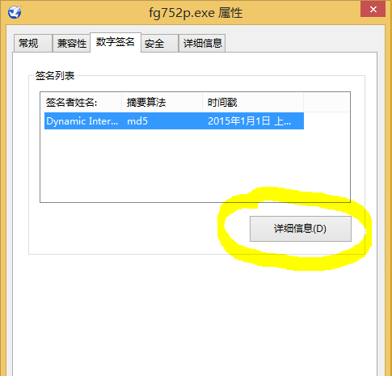

软件简介
自_由_门 是由Dynamic Internet Technology Inc.（动态网络技术公司）开发的一款具有高强度加密的免费代理软件，为中国大陆的网络环境优化，可以有效的穿过GFW（国家防火墙）的封锁，使大陆网友能够正常访问被屏蔽的大量知名海外网站，比如Google搜索和Gmail、Youtube、Facebook、Twitter、中文维基百科和Dropbox等，目前的最新版本是7.57版（2015年10月5日发布）。软件体积小巧（EXE可执行文件不到3M），完全绿色化，支持WindowsXP到10的全系列Windows系统（包括32位和64位），无需安装就可以直接运行，使用也非常便捷，运行以后会自动打开系统自带的IE浏览器上网，如果你使用的是谷歌Chrome这样默认使用系统代理设置的浏览器，也会自动通过软件穿墙上网的，无需其他设置。下载地址
软件教程
自_由_门最新推出的7.5系列版本从新设计了用户界面，改进了对不同浏览器的支持，以后不再单独发布专家版。以下是对软件不是很熟悉的同学可以参考的一个软件使用的简单教程（以7.52版为例，操作系统Windows 8.1）：1、自_由_门是绿色软件，无需安装直接可以运行，支持Windows XP/7/8.1系统（包括32位和64位系统）。下载得到自_由_门以后，首先应该验证软件的数字签名，以确定软件下载的完整性以及未被第三方修改过，方法是先在软件程序图标上单击鼠标右键，在弹出的快捷菜单中选“属性”，然后打开其中的“数字签名”页，双击数字签名或者选上后再点“详细信息”按钮，如下图：
收藏本站
关注最新资源的同学请把本站网址：http://freesgl.github.io/ 加入浏览器收藏夹。
关于
请访问 关于。